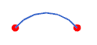
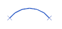
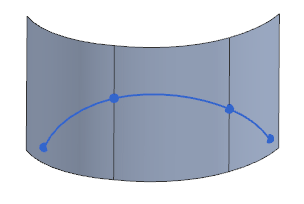

Show End Points
Show End Points
What is it?
The Show End Points command lets you turn the display of the end points of curve features on and off.
You select curves, strings of curves, and curve features on-screen or from the Part Navigator.
You can specify preferences for the appearance of curve end points or change the customer defaults.
|
Filled Circle with Curve Color on. |
|
|
 |
Filled Circle with Curve Color off, Color = <any color>. |
|
Open Circle with Curve Color on. |
|
|
|
Plus Sign with Curve Color on. |
|
 |
Cross with Curve Color on. |

Why should I use it?
Use Show End Points when you want to graphically emphasize the location of curve end points of curve features.
It is also helpful to see how a string of curves is broken into segments.
|

|
Segment end points of projected curve
Where do I find it?
|
Application |
Modeling, Shape Studio |
|
Toolbar |
Analyze Shape→Show End Points |
|
Menu |
Analysis→Shape→Show End Points |
|
Preferences |
Modeling→Analysis→Curve Display |
|
Customer Defaults |
Modeling→Freeform Modeling→Color and Font tab→Curve Display |